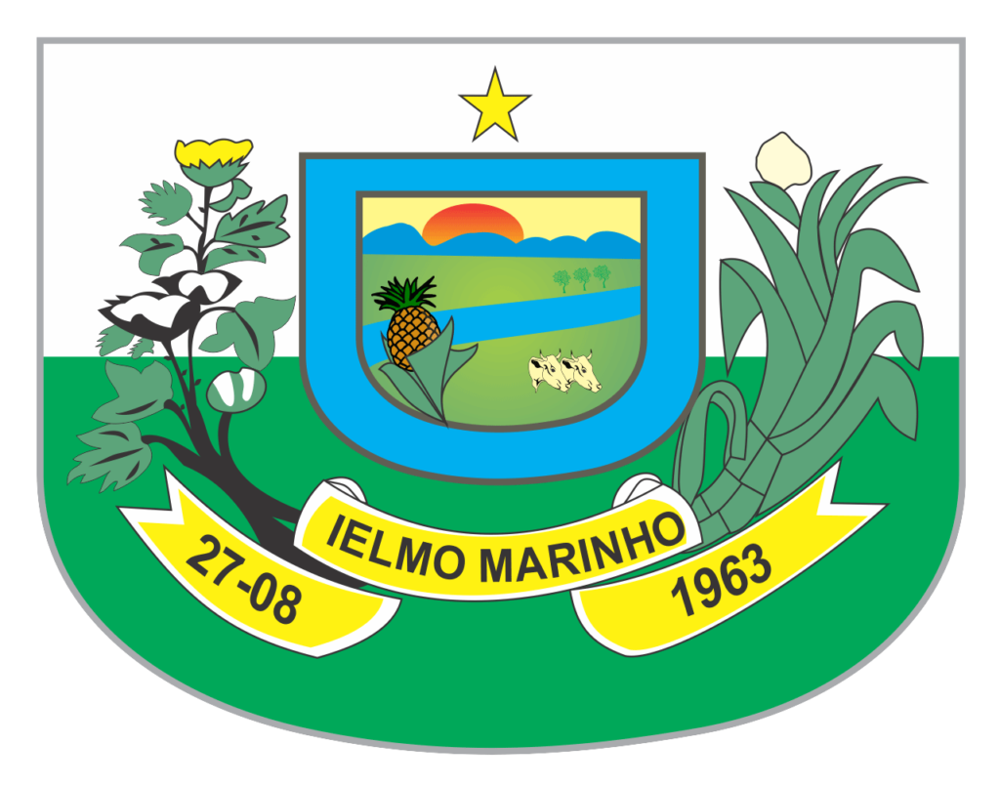

| 
|
Ielmo Marinho - RN Histórico:
Sede na antiga povoação de Poço Limpo, no agreste norte-riograndense.
Pertenceu a Natal. Foi um dos dezoito povoados de São Gonçalo.
As margens do Rio Potengi, terras de gado e plantio, teve sua aurea
fase de alegria e fartura, dos finais do século XX. Em 1877, Ferreira Nobre
citava Poço Limpo como povoado importante.
Atual nome do município foi proposto pelo deputado Manoel Gurgel, em homenagem
a um jovem líder desaparecido aos 25 anos. Filho de São Paulo do Potengi, sofrendo
de doença incurável, desde os 8 anos, Ielmo Marinho de Queiroz, percorria a cavalo
o território, desenvolvendo invejável campanha no plano assistencial. |